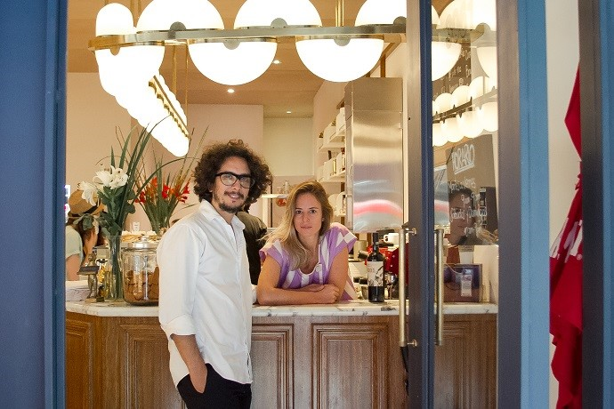
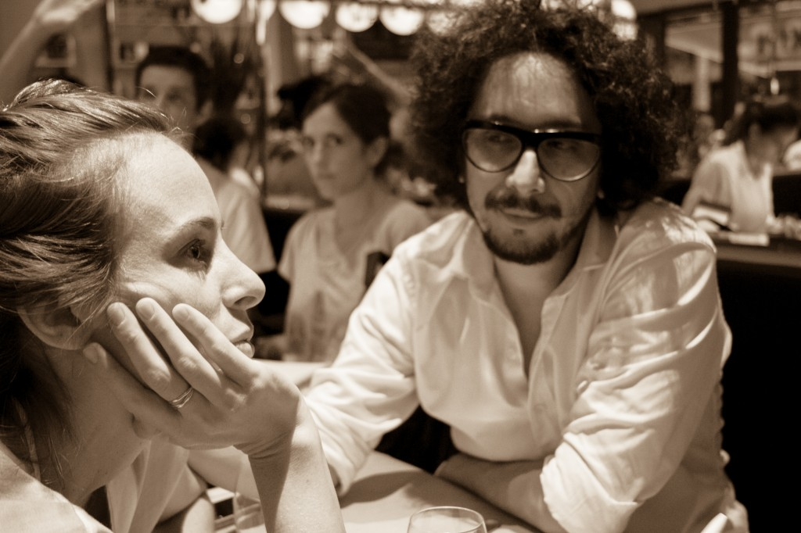

NUESTRA HISTORIA
ZEBALLOS Y ALDO GRAZIANI: es el amor: el que los une a ellos como pareja, primero, y el
que fue el que fue punto de partida para los dos, el amor por la gastronomia. Se conocieron en
Aldo's, la vinoteca y restoran de el, uno de los lugares favoritos de Luli. La idea de abrir
Birkin fue consecuencia natural de la búsqueda de trabajo ya que Luli no tenía, despues haber
encontrado lo que querían, buscaron la locaciónl, la cual fue encontrada el 28 de Noviembre del
2013, justo al lado del Palacio Bellini, sobre la calle Árabe Siria al 3061. Birkin es de algun
modo, un logro para ellos, un punto de encuentro cotidiano.
Dsepues de años trabajando lograron que Birkin sea el café de moda de Palermo Botánico, a donde todos
quieren ir a probar las delicias que ofrecen.

